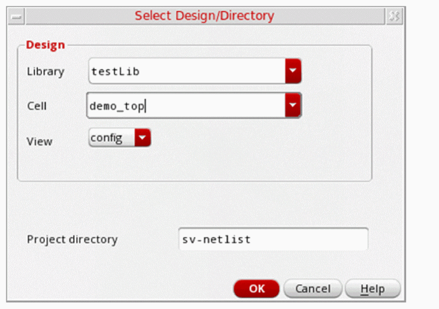
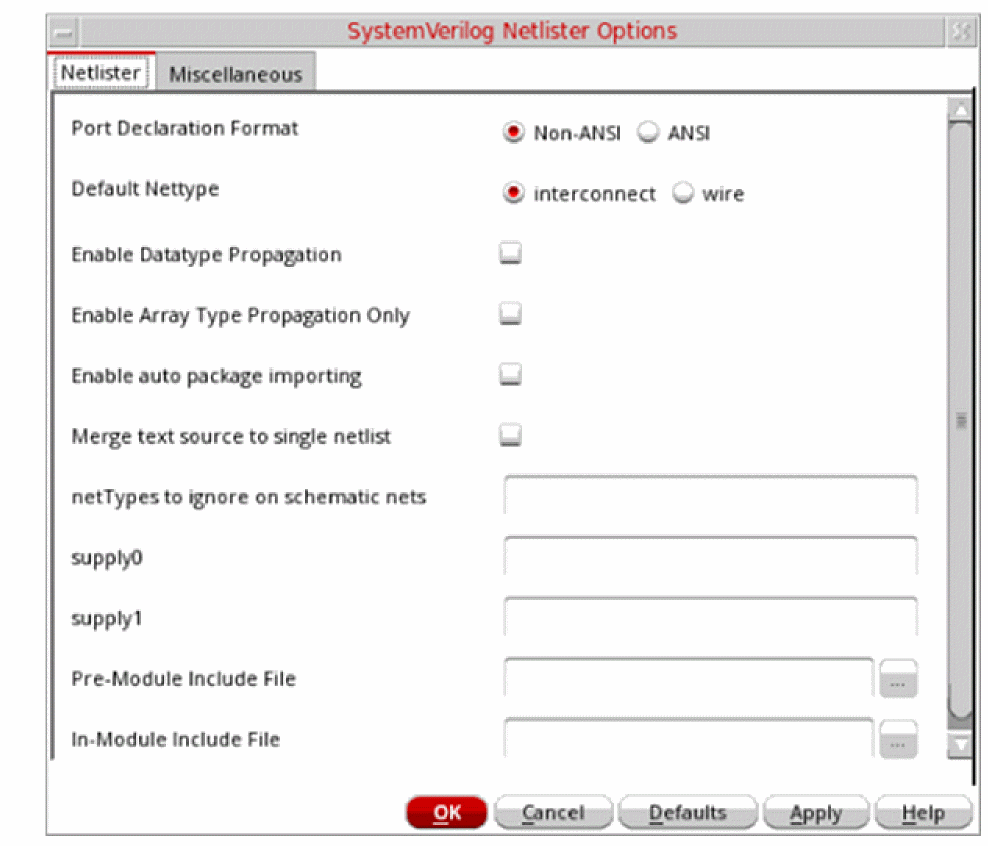
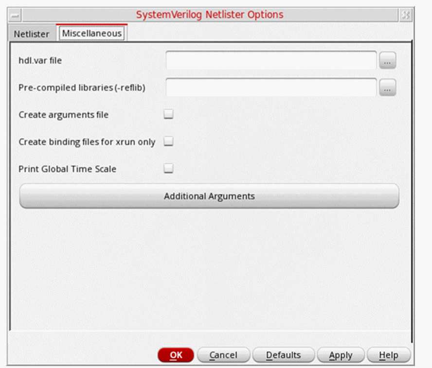
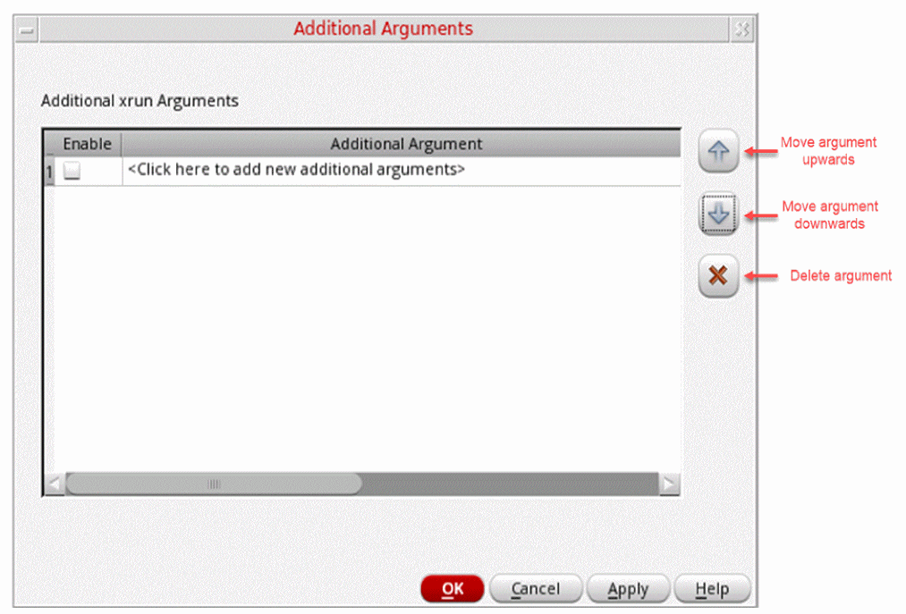
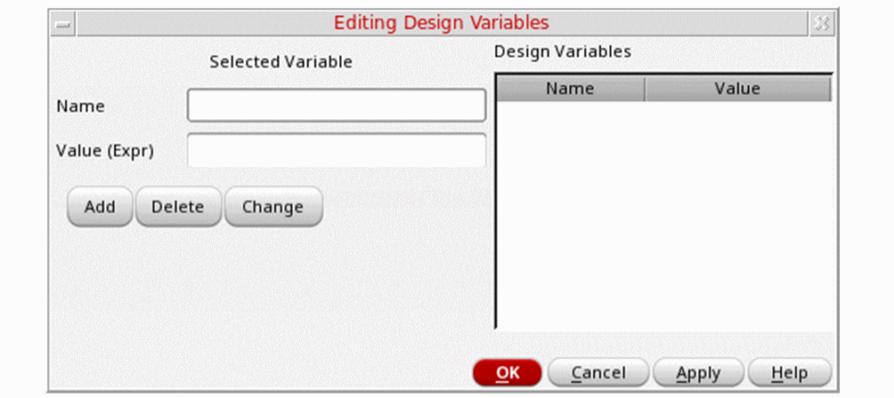
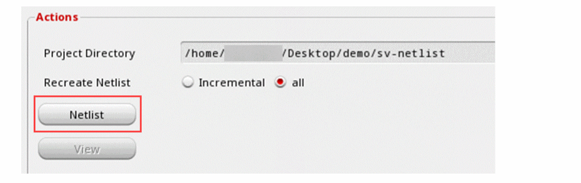
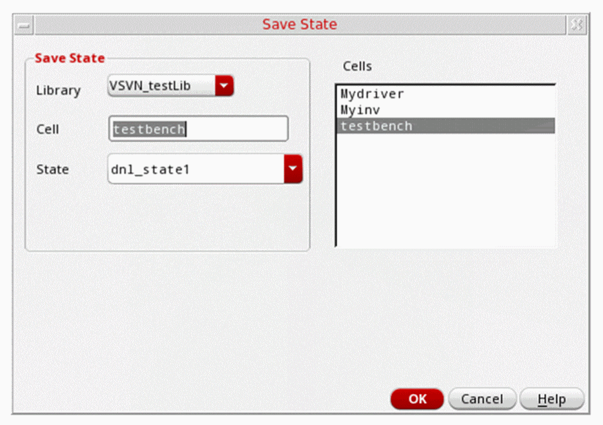
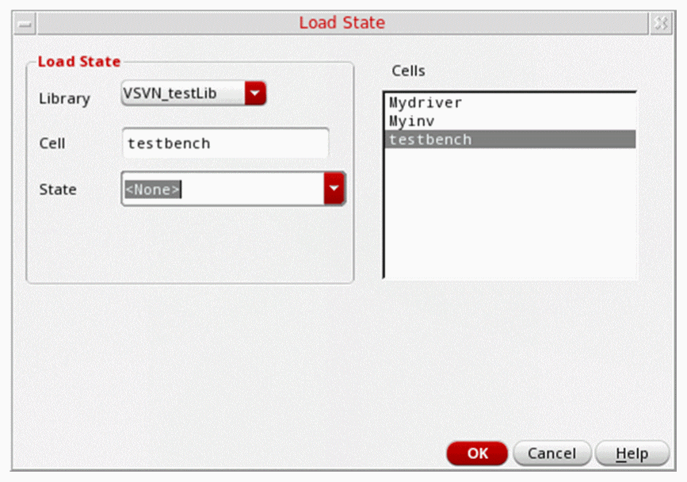
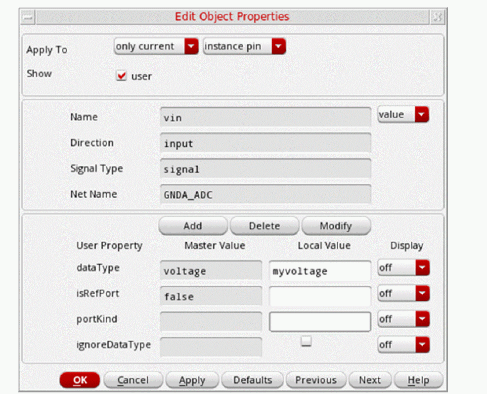
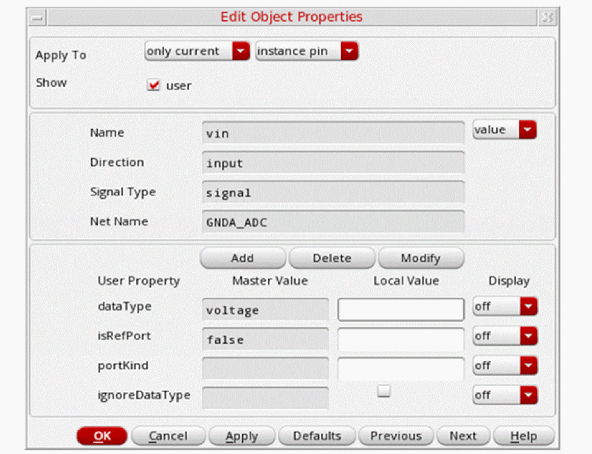

3
Managing Netlist Generation
This chapter describes how to use SystemVerilog Netlister to netlist a design and manage states.
It contains the following topics:
- Netlisting a Design
- Managing States
- Customizing Netlist Generation Using .simrc
- Adding Port Properties to an Instance
Netlisting a Design
You can generate a netlist, which contains connectivity information of a design, after you have specified the design. Configure the netlist generation options before you generate the netlist. When you generate the netlist, SystemVerilog Netlister creates a netlist file of your design based on the settings that you specify and lets you view the netlist file.
This section contains the following topics:
- Specifying a Design
- Setting Up Netlist Generation Options
- Setting Up Design Variables
- Generating a Netlist
- Viewing a Netlist
Specifying a Design
You can start netlist generation by specifying a design.
- Open the SystemVerilog Netlister window. See Launching the SystemVerilog Netlister Interface.
-
Click Browse in the Design group box.
The Select Design/Directory window appears. -
Select a library from the Library list.
The cells in the specified library appear in the Cell list. -
Select a cell from the Cell list.
The views in the specified cell appear in the View list. - Select a config view from the View list.
-
Specify a new project directory name in the Project directory field, if required.
The default project directory name issv-netlist.The project directory contains various subdirectories. When you select a library, cell, and view in the Select Design/Directory window, a new subdirectory is created in the project directory. The subdirectory derives its name from the library, cell, and view names that you select in the design. For example, the typical directory structure of a design is as follows:
projectDir/lib_cell_view/netlist
The CIW displays an appropriate message to indicate that the design specification is successful.
Setting Up Netlist Generation Options
You can set various options, based on which the SystemVerilog Netlister generates a netlist.
To configure netlist generation options:
-
Open the SystemVerilog Netlister window.
See Launching the SystemVerilog Netlister Interface. -
In the Settings group box, click Open Option Form to set additional options.
The SystemVerilog Netlister Options form appears. -
The Netlister tab of the SystemVerilog Netlister Options form appears as follows:
Specify values as follows:
Field Description Select one of the following port declaration formats:
When
hnlPrintNonAnsiSVis set tonilin the.simrcfile and datatype propagation is enabled, port declaration can be done only in ANSI format.Select one of the following net types to netlist the nets on the schematic:
- interconnect(default): If no net type is propagated, the net and the bus are declared explicitly as interconnect.
- wire: A net without another explicitly set type is not declared. Here, only the bus is declared. Single-bit wires are not saved in the declaration because Xcelium resolves signals that are not explicitly declared to be of the type wire.
Select the check box to enable data type propagation. It is not selected by default.
Selecting this check box allows the propagation of both packed or unpacked, and datatype or portKind properties.
Select the check box to enable array type propagation. It is not selected by default.
Selecting this check box disables the Enable Datatype Propagation check box and allows recognition of packed and unpacked arrays. As a result, the SystemVerilog Netlister prints a bus, connected to a port of the type
realor a net type, as unpacked, and propagates the unpacked property up to top level. However, the datatype of the port is not propagated.Select this check box to enable the auto-package handling feature. It allows SystemVerilog Netlister to automatically search and find the SystemVerilog package files on which the
systemverilogmodules in the design depend. It is not selected by default. See Importing a SystemVerilog Package File.Alternatively, you can manually pre-compile a package into a library that you define.
Select this check box to merge the text files to create a single and self-contained
netlist.svfile. This file includes the netlist from the schematic and the original source files from the text view.If you select the Merge text source to single netlist check box, the contents of the
cds_alias.svor thecds_globals.svfile are printed in the netlist.sv file.However, deselecting the Merge text source to single netlist check box results in the following:
-
The absolute path of
cds_alias.svis printed in textInputs but removed from thenetlist.svfile. -
The absolute path of
cds_global.svis printed in xrunArgs but removed from thenetlist.svfile. -
When
simVerilogGenerateSingleNetlistFileis set totin the.simrcfile, it generates a single merged netlist, includingcds_alias.svandcds_globals.sv, if these files exist. When set tonil, it generates a split netlist. -
When Pre-Module Include File or In-Module include File and Merge text source to single netlist are selected, the contents of Pre-Module Include File or In-Module Include File are saved in
netlist.sv.
Specify a value to set the global ground net. This value is saved in the
cds_globals.svfile.Specify a value to set the global power net. This value is saved in the
cds_globals.svfile.Specify the file that the netlister must use as the include file before the module declaration in the netlist file generated for each hierarchical cellview.
If
hnlVerilogDumpIncludeFilesInNetlistis set tot, the content of the include file is copied to the netlist, instead of an‘includestatement.Specify the file that the netlister must use as an include file immediately after the module declaration in the netlist file generated for each hierarchical cellview.
If
hnlVerilogDumpIncludeFilesInNetlistis set tot, the content of the include file is copied to the netlist, instead of an‘includestatement.
Observe the following points:- The supply0 and supply1 options support only global signals in the design. Cross-checking with the schematic is not supported.
-
SystemVerilog Netlister supports customizing netlist generation using the
.simrcfile. However, SystemVerilog Netlister might not always support all the variables in.simrcthat are supported by the SI Netlister. -
Datatype propagation and default net type selection result in the following scenarios:
- When Default Nettype is set to Interconnect and Enable Datatype Propagation is deselected, the interconnects are printed in the netlist in the Non-ANSI format but the datatype is not propagated.
- When Default Nettype is set to Interconnect and Enable Datatype Propagation is selected, the interconnects, ports, and datatypes are printed in the netlist in the ANSI format.
- When Default Nettype is set to Wire and Enable Datatype Propagation is selected, interconnects are not printed in the design but the ports are printed with the datatype in the netlist in the ANSI format.
-
Select the Miscellaneous tab of the SystemVerilog Netlister Options form. The form appears as follows:
Specify values as follows:
Field Description Specify the name of an
hdl.varfile to include the simulation options.To know more about the hdl.var file, see the
Xcelium XRUN User Guide .Specify the name of a pre-compiled library. If you have a package definition, you can pre-complile the package into the same library or different libraries.
Select this check box to create the
xrunArgsfile and other standard binding files. This file includesnetlist.sv,config.sv,textInputs, binding files, and other files, such ascds_globals.svandcds_alias.sv. These files are generated during netlisting and are needed for simulations.Select this check box only if you use
xrun. Selecting this check box automatically selects the Create arguments file check box and creates two sets of binding files in the netlist directory:xrunArgs,xrunArgs_vy(compatible with Xcelium), and thehdl.var,cds_xrun.libandlib.mapfiles.Both
xrunArgsandxrunArgs_vyinclude the following:-
xrunArgsincludes thelib.mapfile. -
xrunArgs_vyincludes thehdl.varandcdsliborcds_xrun.libfile.
If you specify an
hdl.varfile in the Miscellaneous tab of the SystemVerilog Netlister Options form, this file is included in thehdl.varfile that SystemVerilog Netlister generates.Select the check box to print the global time scale. By default, SystemVerilog Netlister does not print the time scale globally.
When Print Global Time Scale is enabled, you can set the following variables in the
.simrcfile to overwrite the time values or units defined within a design:Click the button to specify additional
xrunarguments. See Specifying Additional Arguments. -
- Click OK.
Before you generate the netlist of a design, ensure that you configure the netlist generation options, as required. SystemVerilog Netlister generates the netlist based on how you configure these options. SystemVerilog Netlister stores the netlist file in the <projectDir>/<lib>_<cell>_<view>/netlist/ directory.
For example: projectDir/lib_cell_view/netlist/netlist.sv
Importing a SystemVerilog Package File
Before you import SystemVerilog package files into your design for netlisting, ensure that your design has a package file, for example, global_package.sv, and a systemVerilog view that has imported this package file.
-
In the Library Manager window:
-
Create a new
systemVerilogPackageview by choosing File – New – Cell View.
The New File form opens. - Specify the library and cell name in their respective fields.
-
In the View list, select
systemVerilogPackage. -
Click OK.
The New File form closes, and the View list in the Library Manager shows the new view. -
Double-click the
systemVerilogPackageview.
The view opens with an empty package module in Virtuoso Text Editor.
-
Create a new
-
In the Virtuoso Text Editor window:
-
Choose File – Open.
The Open File form opens. -
Select the
global_package.svpackage file and open it in a new tab. -
Copy the contents of the package file and paste them into the package module of the
systemVerilogPackageview. -
Click the Check and Save button on the toolbar.
Correct any errors that are reported. -
Open the
systemVerilogview in a new tab.
This is the view that has imported the package file. -
Click the Check and Save icon on the toolbar.
Ensure that no errors are reported.
-
Choose File – Open.
-
In the SystemVerilog Netlister window:
-
In the Setting group box, click Open Option Form.
This opens the SystemVerilog Netlister Options form and shows the Netlister tab. - On the Netlister page, select Enable auto package importing.
- Click OK to close the SystemVerilog Netlister Options form.
-
In the Action group box, click Netlist.
Ensure that no errors are reported.
-
In the Setting group box, click Open Option Form.
Specifying Additional Arguments
To specify additional xrun arguments in the netlisting settings in SystemVerilog Netlister:
-
In the SystemVerilog Netlister window, click Browse to specify a design.
The fields in the window are populated with the design details. - Click Open Options Form to access the netlisting settings.
- In the Open Options Form window, click the Miscellaneous tab.
-
In the Miscellaneous page, click Additional Arguments.
The Additional Arguments form opens.The following table describes the columns available in the Additional Arguments form:Column Description Specifies the name of the
xrunargument. Click the field to add a new argument name or edit an existing argument name. -
Specify valid
xrunarguments in the Additional Arguments form.
These arguments are appended to thexrunArgsfile that is generated. If Create binding files for xrun only is enabled, SystemVerilog Netlister appends these additional arguments to both thexrunArgsandxrunArgs_vyfiles. -
Click OK.
The Additional Arguments form closes.
Setting Up Design Variables
You can add design variables to your netlisting settings in SystemVerilog Netlister after choosing your design.
-
Click Design Variables in the SystemVerilog Netlister window.
The Editing Design Variables form opens.

- Specify a name for the design variable in the Name field.
- Specify a value for the design variable in the Value (Expr) field.
-
Do the following:
-
To add a variable, click Add.
The design variable appears in the Design Variables list on the right and is saved in thecds_globals.svfile. - To delete a design variable, select the variable name from the Design Variables list box and click Delete.
-
To change the name or value of a design variable, select the variable name from the Design Variables list box and click Change.
Edit the name or the value of the design variable, as required.
-
To add a variable, click Add.
- Click OK.
Generating a Netlist
To generate the netlist of a selected design:
-
Having set up options and variables for the selected design, click Netlist in the Actions group box of the SystemVerilog Netlister window.
SystemVerilog Netlister does the following:
-
In the Actions group box, select one of the following:
- Incremental: Netlists only the changes that you make to the design or the settings. In case of large designs, this mode of netlist generation highly improves the performance.
- All: Recreates the complete netlist. In case of large designs, this mode of netlist generation might decrease the performance.
Viewing a Netlist
A netlist contains the connectivity information of a design. To view the netlist of your design:
-
In the Actions group box of the SystemVerilog Netlister window, click View.
The
netlist.svfile opens.
The following figure illustrates how SystemVerilog Netlister displays the netlist file:
Managing States
You can save the current state of your settings or load saved states and settings in SystemVerilog Netlister. It is useful when you want to avoid repeated setups of netlisting settings.
Saving States
To save a state with the specified settings:
-
In the Settings group box of the SystemVerilog Netlister window, click Save State.
The Save State form appears. 
- In the State field, specify a new name for the current state.
- Click OK.
Loading States
To load a saved state when you launch SystemVerilog Netlister:
-
In the Settings group box of the SystemVerilog Netlister window, click Load State.
The Load State form appears. 
- In the State list, select the name of the state that you want to load.
- Click OK.
Customizing Netlist Generation Using .simrc
You can customize the netlist generation in SystemVerilog Netlister by setting the following variables in the .simrc file:
To know more about using the .simrc file, see Virtuoso ADE Explorer User Guide.
Adding Port Properties to an Instance
The SystemVerilog Netlister allows you to modify the port properties dataType and portKind, which are specific to an instance. When ignoreDataType is set to t, the properties dataType and portKind are ignored. Instead, the dataType information that is propagated from the bottom-level cell to the top-level cell is considered.
You can add the ignoreDataType property on a specific instance terminal in the schematic. If this property is selected, the SystemVerilog Netlister will not print the Master Value and the Local Value.
Additionally, you can modify the local values of the port properties dataType and portKind that are associated with a specific instance of a cell.
The following table clearly describes the impact of enabling and disabling the ignoreDataType property on the port of an instance in different scenarios:
Example
Consider the input port I2 in the following schematic and the related condition scenarios that follow.
-
When ignoreDataType is set to t on the port of an instance
When you setignoreDataTypetotonI2, the master and local values ofdataTypeandportKindare ignored. In such a case,dataTypeinformation that is propagated from the bottom-level cell to the top-level cell is used.
The following example shows how the netlist displays the port information in this scenario:
module tb_w_voltage ( output wire logic VOUT0, output wire logic VOUT1, output wire logic VOUT2, input wire logic GNDA_ADC, input voltage VIN0, input voltage VIN1 );
Here, the wire logic value is derived from the dataType property of the bottom-level cell.
-
When ignoreDataType is set to nil and the local value of dataType is set to custom_value
When you setignoreDataTypetonilonI2and the local valuedataTypetomyvoltage, the local valuemyvoltageof the specific instance is used, instead of the master valuevoltagethat is set on the symbol cell.The following example shows how the netlist displays the port information in this scenario:module tb_w_voltage ( output wire logic VOUT0, output wire logic VOUT1, output wire logic VOUT2, input myvoltage GNDA_ADC, input voltage VIN0, input voltage VIN1 );
Here, the local value overrides the master value. -
When ignoreDataType is set to nil and the local value of dataType is not set
When you setignoreDataTypetonilonI2and the local values ofdataTypeandportKindare not set, the master valuevoltageof the symbol cell property is used.The following example shows how the netlist displays the port information in this scenario:module tb_w_voltage ( output wire logic VOUT0, output wire logic VOUT1, output wire logic VOUT2, input voltage GNDA_ADC, input voltage VIN0, input voltage VIN1 );
Here, the property of the symbol cell (master value) is used.
Return to top